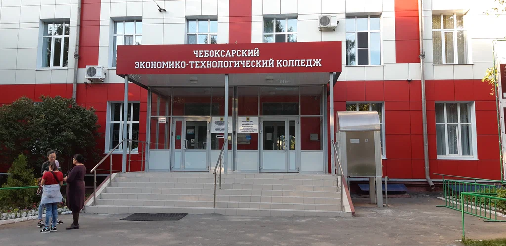

Мой колледж
Чебоксарский экономико-технологический колледж:Здесь студенты получают практические навыки в сфере технологий, экономики, права, индустрии гостеприимства и безопасности. Колледж предлагает около 18 учебных программ, а выпускники в основном трудоустраиваются на предприятия Чебоксар и Чувашской Республики.

Моя специальность
Информационные системы и программирование (09.02.07):готовит специалистов для разработки, внедрения и сопровождения программных продуктов и информационных систем. Студенты осваивают языки программирования, работу с базами данных и принципы проектирования IT‑решений
Чему я учусь
- Веб-разработка
- Базы данных
- Программирование